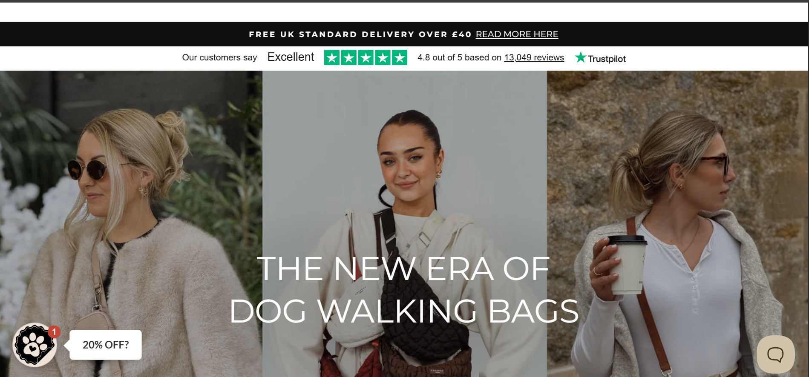

A fast, mobile-first Shopify store for a London-based pop-up events brand ó rebuilt to improve conversion, showcase products, and support event bookings.
ShopifyE-commerceResponsive[TECH_4]
Client TypeRetail & Events
Timeline21 Days
PlatformShopify
StatusLive
The Brief
Cocopup London runs city pop-up events and an online shop selling limited-run products. They needed a high-converting online store that matches the energy of their brand, supports fast checkout at events, and works flawlessly on mobile devices. The project focused on improving product presentation, simplifying the purchase flow for event customers, and creating a reliable, easy-to-manage Shopify backend so the team could publish new pop-up collections quickly.
The Challenge
Poor mobile experience causing high drop-off during event-driven traffic spikes.
Product pages lacked clarity and didn't highlight limited editions or event-specific stock.
Slow product images and unoptimized checkout increased abandoned carts.
The Solution
I built a custom Shopify theme optimized for quick product discovery and fast checkout. Key work included responsive product templates, prioritized image loading (responsive srcsets + lazy-loading), clear stock / limited edition labels, and a one-click event checkout flow using Shopify's cart features and app integrations. I also added an easy-to-use collection and product meta-field setup so the Cocopup team can prepare event-specific collections and stock counts without developer intervention. Performance tweaks (image compression and critical CSS) reduced load times dramatically for mobile visitors.
Results
⌁
2.4xIncrease in Checkout Conversion
⌁
21 DaysFull Launch
⌁
68%Increase in Mobile Revenue
Screenshots

Homepage and event-focused hero showing current collection and upcoming pop-up dates.Optimized product templates with clear stock labels and fast image loading.Mobile checkout flow designed for quick purchases during events.
Tech Stack
ShopifyLiquidHTMLCSSSEO
Want results like this for your business?
Let’s plan a website that looks premium, loads fast, and turns visitors into leads.